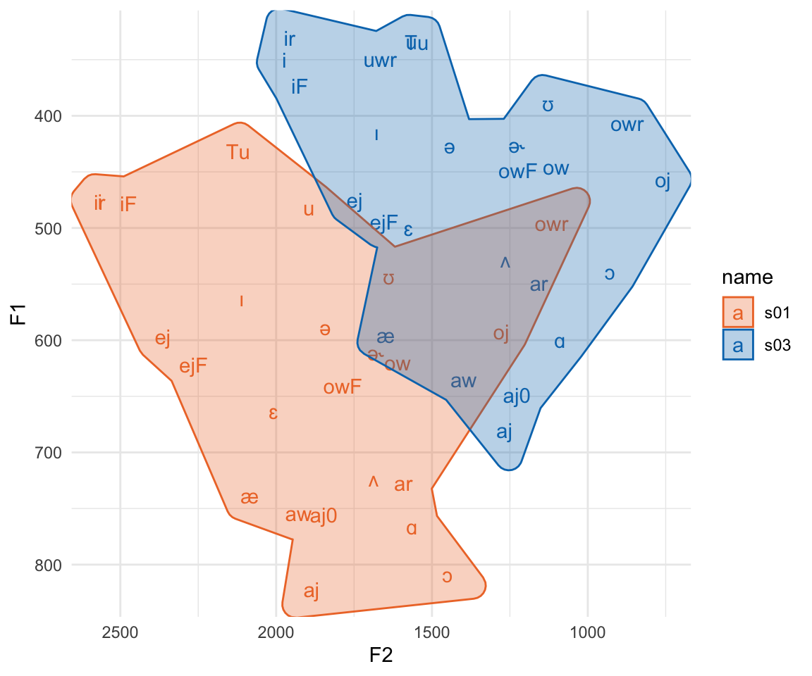
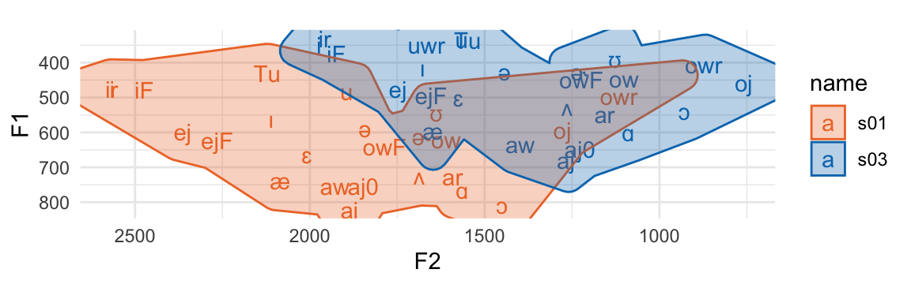
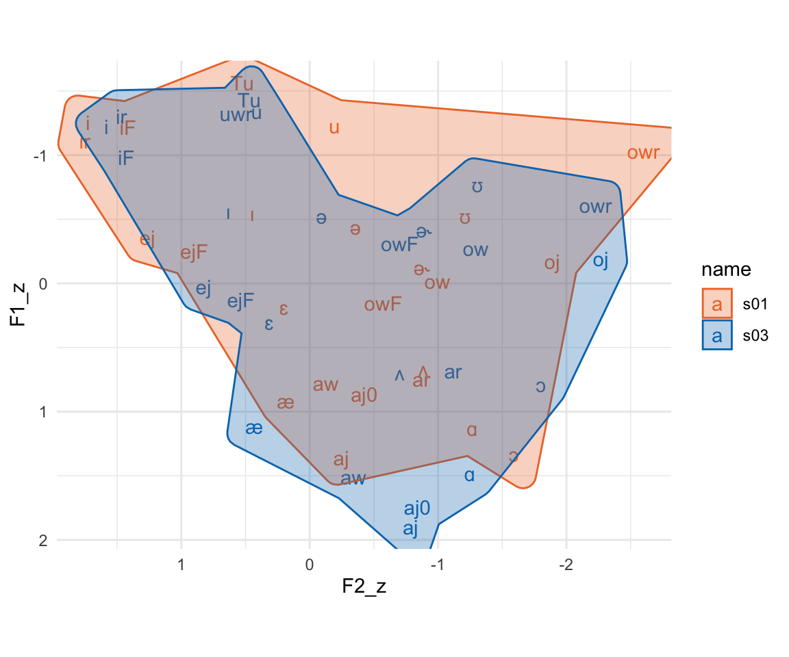
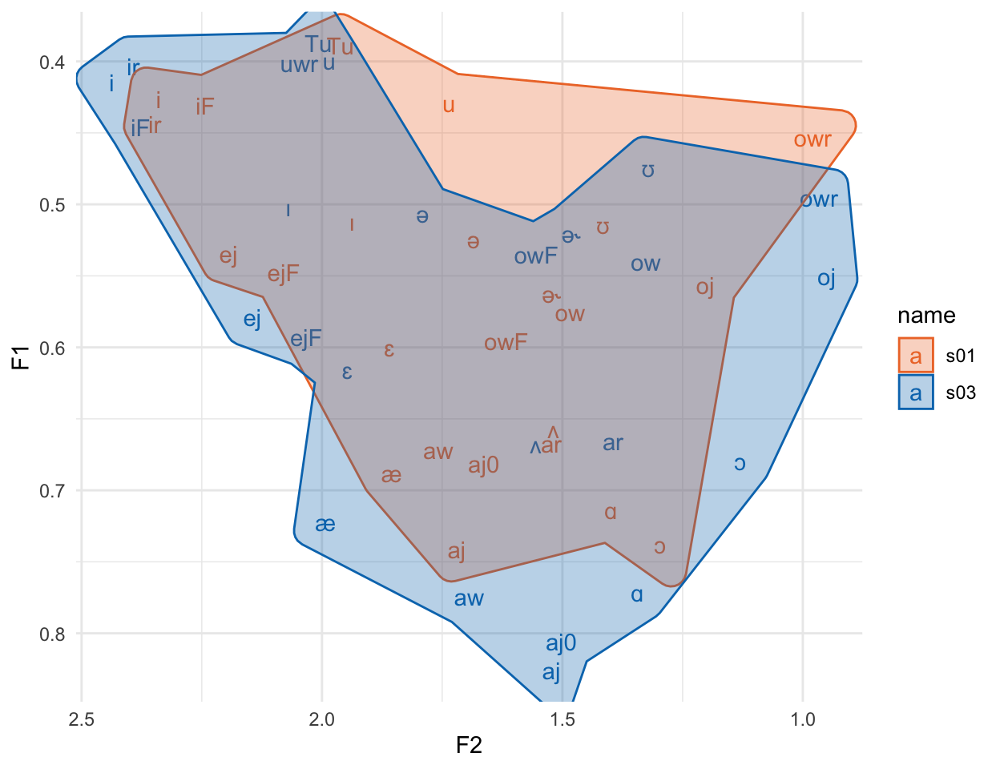
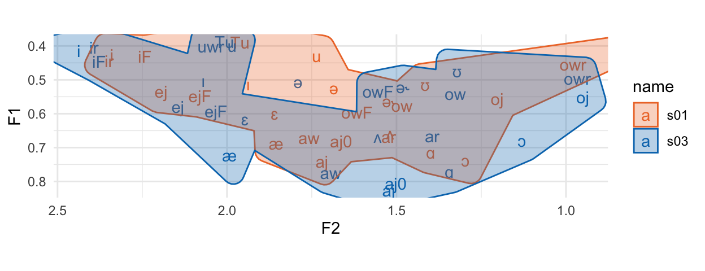
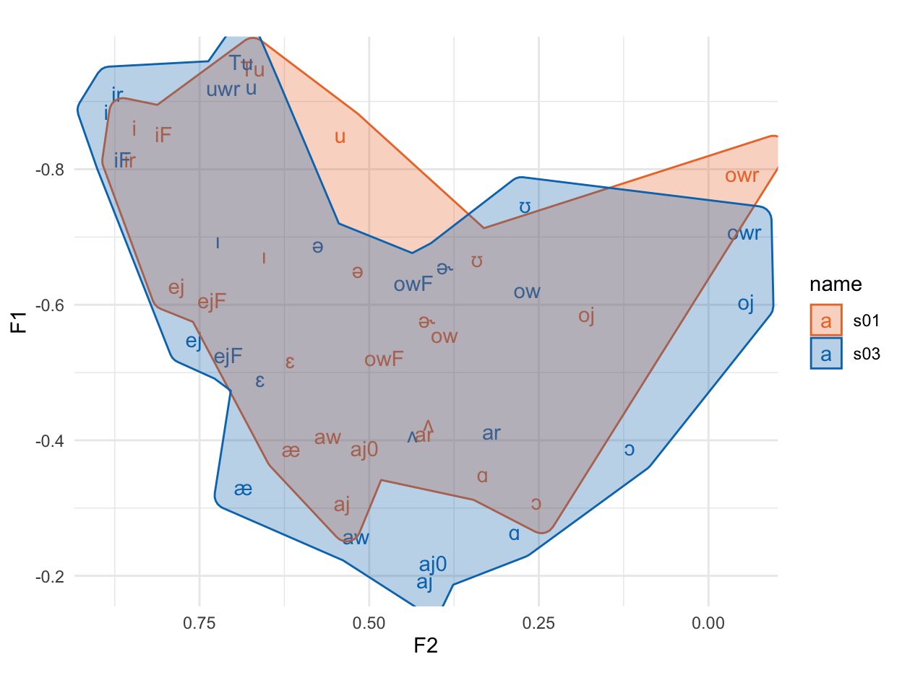
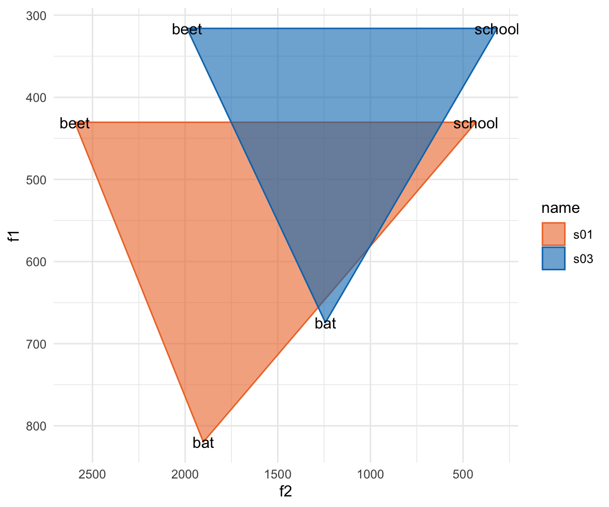
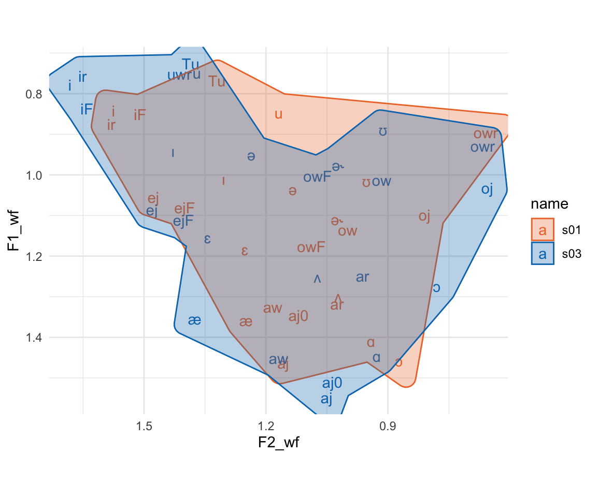

How to normalize your vowels using the tidyverse
This is a tutorial about how to “normalize” vowel formant data using data tools from the tidyverse. A lot has been written about vowel normalization (why we do it, how it should work, what methods are best) that I can’t really cover here, although Adank & Smits & Hout (2004) is often taken as the canonical citation, and I’ll be taking into account the recent “order of operations” from Stanley (2022).
There’s also a vowels R package (Kendall & Thomas 2018) that basically lets you run the NORM suite locally.
There are still many occasions when you might want or need to normalize your vowel data yourself, though, and learning how to do it is actually a great introduction to a number of tidyverse “verbs”, especially:
Since I’m focusing on how data structures relate to vowel normalization, I’ll cover 3 specific normalization procedures:
Lobanov (a.k.a. z-scoring)
In terms of tidy data procedures, this is the simplest. All it requires is a group_by() and a mutate()
Nearey 2
This procedure is a little more complicated, involving “pivoting” our data from wide to long, then long to wide again, using pivot_longer() and pivot_wider().
Watt & Fabricius
This method requires estimating by-speaker scaling factors (using group_by() and summarise()) then merging them back onto the original data (with left_join()).
Setup
To begin with, I’m going to import a few packages:
tidyverse: This is a “metapackage” that imports many different packages that contain functions we’ll need, includingggplot2ggforce: This is a package that extends some ofggplot2’s functionalitykhroma: This is another packages that has many different color palates forggplot2.joeyr: This is a package with functions written by Joey Stanley for vowel analysis.
Any time I use a function that’s not loaded by the tidyverse, I’ll indicate it with the package::function() convention.
library(tidyverse)
library(ggforce)
library(khroma)
# remotes::install_github("JoeyStanley/joeyr")
library(joeyr)
# set the ggplot2 theme
theme_set(theme_minimal())We also need to load in some data. Here are two tab-delimited files of Buckeye Corpus speakers whose interviews were run through FAVE.
s01_url <- "https://lingmethodshub.github.io/content/R/tidy-norm/data/s01.txt"
s03_url <- "https://lingmethodshub.github.io/content/R/tidy-norm/data/s03.txt"This code should load these files.
vowels_orig <- map_dfr(c(s01_url, s03_url),
~read_tsv(.x, col_types=cols(sex = 'c')))
What that map_dfr thing did:
The map_dfr function iterated over each url, and applied the function read_tsv() to them. I had to tell read_tsv() that the column sex should be treated as a character data type, since the value f gets reinterpreted as FALSE otherwise. After reading in each tab-delimited file, map_dfr() then combines the results together row-wise, to produce one large data frame.
The variable vowels_orig is now one large data frame with both speakers’ FAVE output in it. Here’s three randomly sampled rows from each speakers’ data.
set.seed(50)
vowels_orig %>%
group_by(name) %>%
slice_sample(n = 3) %>%
knitr::kable()| age | city | ethnicity | first_name | last_name | location | name | sex | state | tiernum | year | years_of_schooling | vowel | stress | pre_word | word | fol_word | F1 | F2 | F3 | B1 | B2 | B3 | t | beg | end | dur | plt_vclass | ipa_vclass | plt_manner | plt_place | plt_voice | plt_preseg | plt_folseq | style | glide | pre_seg | fol_seg | context | vowel_index | pre_word_trans | word_trans | fol_word_trans | F1@20% | F2@20% | F1@35% | F2@35% | F1@50% | F2@50% | F1@65% | F2@65% | F1@80% | F2@80% | nFormants |
|---|---|---|---|---|---|---|---|---|---|---|---|---|---|---|---|---|---|---|---|---|---|---|---|---|---|---|---|---|---|---|---|---|---|---|---|---|---|---|---|---|---|---|---|---|---|---|---|---|---|---|---|---|---|
| y | NA | NA | NA | NA | NA | s01 | f | NA | 0 | NA | NA | IY | 0 | THESE | REALLY | ARE | 555.3 | 2140.4 | 3260.0 | 237.0 | 149.0 | 310.5 | 2677.844 | 2677.811 | 2677.911 | 0.10 | iyF | iF | NA | NA | NA | liquid | NA | NA | NA | L | AA1 | final | 4 | DH IY1 Z | R IH1 L IY0 | AA1 R | 605.8 | 1935.0 | 568.2 | 2100.6 | 528.1 | 2216.9 | 591.2 | 2161.8 | 645.2 | 2073.1 | 5 |
| y | NA | NA | NA | NA | NA | s01 | f | NA | 0 | NA | NA | AH | 0 | WONDERFUL | REPUTATION | AN | 602.3 | 2017.2 | 3149.3 | 145.5 | 308.1 | 126.9 | 735.287 | 735.264 | 735.334 | 0.07 | @ | ə | nasal | apical | voiced | palatal | NA | NA | NA | SH | N | internal | 9 | W AH1 N D ER0 F AH0 L | R EH2 P Y AH0 T EY1 SH AH0 N | AH0 N | 962.4 | 2333.7 | 661.2 | 2092.4 | 585.0 | 1872.9 | 573.0 | 1934.5 | 563.2 | 1923.1 | 5 |
| y | NA | NA | NA | NA | NA | s01 | f | NA | 0 | NA | NA | EH | 1 | QUITE | WELL | NOW | 709.6 | 1388.0 | 2788.7 | 171.5 | 194.6 | 183.9 | 584.777 | 584.757 | 584.817 | 0.06 | e | ɛ | lateral | apical | voiced | w/y | NA | NA | NA | W | L | internal | 2 | K W AY1 T | W EH1 L | N AW1 | 635.1 | 1314.8 | 635.1 | 1314.8 | 777.8 | 1445.7 | 803.7 | 1455.2 | 804.4 | 1451.3 | 5 |
| o | NA | NA | NA | NA | NA | s03 | m | NA | 0 | NA | NA | ER | 1 | TODAY | VERSUS | WHAT | 409.7 | 1251.9 | 3475.6 | 106.6 | 119.1 | 326.0 | 1993.785 | 1993.742 | 1993.872 | 0.13 | *hr | ə˞ | fricative | apical | voiceless | oral_labial | one_fol_syll | NA | NA | V | S | internal | 2 | T AH0 D EY1 | V ER1 S AH0 S | W AH1 T | 607.3 | 2460.1 | 411.1 | 1261.4 | 408.2 | 1225.1 | 351.9 | 1299.7 | 1327.9 | 3962.3 | 3 |
| o | NA | NA | NA | NA | NA | s03 | m | NA | 0 | NA | NA | AA | 2 | WELL | GRANDPA | HOW | 536.1 | 857.6 | 2272.3 | 134.7 | 111.2 | 335.8 | 3291.208 | 3291.151 | 3291.321 | 0.17 | o | ɑ | NA | NA | NA | oral_labial | NA | NA | NA | P | HH | final | 6 | W EH1 L | G R AE1 M P AA2 | HH AW1 | 444.9 | 893.9 | 533.6 | 861.6 | 554.7 | 829.6 | 508.0 | 853.2 | 620.7 | 1022.6 | 6 |
| o | NA | NA | NA | NA | NA | s03 | m | NA | 0 | NA | NA | IH | 0 | OF | THIS | MASS | 429.4 | 1460.3 | 2851.0 | 61.9 | 244.1 | 635.2 | 936.169 | 936.136 | 936.236 | 0.10 | i | ɪ | fricative | apical | voiceless | oral_apical | NA | NA | NA | DH | S | internal | 2 | AH0 V | DH IH0 S | M AE1 S | 420.9 | 1372.7 | 428.0 | 1441.2 | 427.1 | 1487.8 | 415.2 | 1517.5 | 385.8 | 1482.9 | 5 |
FAVE outputs a lot of useful information, but for this tutorial, I want to narrow down our focus to just a few columns
name: We’ll use this as a unique ID for each speakerword: It’s just good to keep this info aroundipa_vclass: A column indicating each token’s vowel class in an IPA-like formatF1,F2: What we’re all here for. The first and second formants.
vowels_orig %>%
select(name, word, ipa_vclass, F1, F2) -> vowels_focusvowels_focus %>%
head() %>%
knitr::kable()| name | word | ipa_vclass | F1 | F2 |
|---|---|---|---|---|
| s01 | OKAY | ejF | 763.5 | 2088.1 |
| s01 | UM | ʌ | 699.5 | 1881.3 |
| s01 | I’M | aj | 888.8 | 1934.1 |
| s01 | LIVED | ɪ | 555.5 | 1530.5 |
| s01 | IN | ɪ | 612.2 | 2323.4 |
| s01 | COLUMBUS | ə | 612.4 | 1903.7 |
Unnormalized
First, let’s see how things look when we get our vowel means and plot them unnormalized. I won’t go into detail about how the plotting code works (see the LingMethodsHub tutorial on ggplot2 vowel plots).
Plot code
vowels_focus %>%
group_by(name, ipa_vclass) %>%
summarise(across(c(F1, F2), .fns = mean)) %>%
ungroup() %>%
ggplot(aes(F2, F1, color = name))+
geom_text(aes(label = ipa_vclass))+
ggforce::geom_mark_hull(aes(fill = name))+
scale_x_reverse()+
scale_y_reverse()+
khroma::scale_color_vibrant()+
khroma::scale_fill_vibrant()
Here, we see reason number 1 why we’ll want to normalize vowels. These two speakers vowel spaced hardly overlap, but the relative position of vowel categories inside their spaces are fairly similar. All normalization methods try to do is pinch and scale appropriately to get the relative positions of these vowel spaces to overlap.
Another reason we might be motivated to normalize our data is because F2 has a much larger range of data than F1. We can more easily see that if we add coord_fixed() to the plot.
Plot code
vowels_focus %>%
group_by(name, ipa_vclass) %>%
summarise(across(c(F1, F2), .fns = mean)) %>%
ungroup() %>%
ggplot(aes(F2, F1, color = name))+
geom_text(aes(label = ipa_vclass))+
ggforce::geom_mark_hull(aes(fill = name))+
scale_x_reverse()+
scale_y_reverse()+
khroma::scale_color_vibrant()+
khroma::scale_fill_vibrant()+
coord_fixed()
The plot is squished because F2 just has that much larger a range of values than F1. Any stats or calculations we do on vowels in the F1\(\times\)F2 space is going to be dominated by things that happen across F2 vs F1.
Prepping for normalization
In order to get ready for normalization, I’m going to first filter out any vowel tokens that have a \(\sqrt{\text{mahalanobis}}\) distance from its vowel class greater than 2.
vowels_focus %>%
group_by(name, ipa_vclass) %>%
mutate(mahal = joeyr::tidy_mahalanobis(F1, F2),
mahal_sq = sqrt(mahal)) %>%
filter(mahal_sq <= 2) %>%
ungroup() -> vowels_inlieNormalizations
Lobanov a.k.a. z-score
The first normalization procedure we’ll look at is “Lobanov” normalization (Lobanov 1971). An important thing to know here is that while phoneticians may call this procedure “Lobanov” normalization, the rest of the data analysis world calls it “z-score” or even just “standard score.”
The process works like this:
Within each speaker’s data ⤵️
Within each formant ⤵️
- subtract the mean of the formant, and divide by the standard deviation of the formant
Since we already a have F1 and F2 separated out into separate columns, this means all we have to do us group_by() our vowels data by speaker ID (in name), then create our new normalized columns by subtracting the mean and dividing by the standard deviation.
vowels_inlie %>%
group_by(name) %>%
mutate(F1_z = (F1 - mean(F1))/sd(F1),
F2_z = (F2 - mean(F2))/sd(F2)) -> vowels_score1The group_by(name) process in this pipeline means that when we calculate mean(F1) and std(F1) in the next part, those mean and standard deviation values are for each speaker’s subset of vowels_inlie.
Since z-scoring is so common a thing to do in quantitative analysis, R actually has a built in function, scale() that we could use instead of writing the math out ourselves.
vowels_inlie %>%
group_by(name) %>%
mutate(F1_z = scale(F1),
F2_z = scale(F2)) -> vowels_zscore2Results
Here’s the results of z-scoring! We’ve got largely overlapping vowel spaces now. The numeric values of these z-scores tend to run somewhere between -3 and 3 (less extreme for means). Both formants are also on the same scale, which you can see with the plot being roughly square shaped even with coord_fixed() being added.
Plot code
vowels_zscore2 %>%
group_by(name, ipa_vclass) %>%
summarise(across(c(F1_z, F2_z), .fns = mean)) %>%
ggplot(aes(F2_z, F1_z, color = name))+
geom_text(aes(label = ipa_vclass))+
ggforce::geom_mark_hull(aes(fill = name))+
scale_x_reverse()+
scale_y_reverse()+
khroma::scale_color_vibrant()+
khroma::scale_fill_vibrant()+
coord_fixed()
Nearey (a.k.a. Nearey 2)
Next, we’ll look at what the vowels package calls “Nearey 2” normalization (Nearey 1978). The Nearey 1 procedure is more similar in terms of data code as z-scoring.1 The Nearey 2 procedure works like this:
Within each speaker ⤵️
Convert all formant measurements to log-Hz
Get the mean log-Hz across all measurements (F1 and F2 together)
Subtract the mean log-Hz from the log-Hz
“Anti-log” or exponentiate the result
We need to combine F1 and F2 measurements together to get their mean, and this is best achieved in the tidyverse by “pivoting” the data frame from wide to long. We’ll take it in steps. In each next step, I’m going to be putting additional tidyverse verbs between the data frame and the line that has head() %>% knitr::kable(), which is just there to provide nice looking output.
Step 1: Focus in on the columns of interest
The vowels_inlie has data columns for the mahalanobis distance, which I want to drop off for now.
vowels_inlie %>%
select(name, word, ipa_vclass, F1, F2) %>%
# more verbs to go here
head() %>% knitr::kable()| name | word | ipa_vclass | F1 | F2 |
|---|---|---|---|---|
| s01 | UM | ʌ | 699.5 | 1881.3 |
| s01 | I’M | aj | 888.8 | 1934.1 |
| s01 | IN | ɪ | 612.2 | 2323.4 |
| s01 | COLUMBUS | ə | 612.4 | 1903.7 |
| s01 | ENTIRE | ɪ | 529.9 | 2332.1 |
| s01 | ENTIRE | ə˞ | 538.4 | 1682.8 |
Step 2: Add an ID column
When we’re pivoting our data long and then wide again, we need to have a column that is a unique id for each vowel observation. I’ll create that with mutate(id = 1:n()) . The n() function there is a convenience function that returns the number of rows in each (group) of the data frame.
vowels_inlie %>%
select(name, word, ipa_vclass, F1, F2) %>%
mutate(id = 1:n()) %>%
# more verbs to go here
head() %>% knitr::kable()| name | word | ipa_vclass | F1 | F2 | id |
|---|---|---|---|---|---|
| s01 | UM | ʌ | 699.5 | 1881.3 | 1 |
| s01 | I’M | aj | 888.8 | 1934.1 | 2 |
| s01 | IN | ɪ | 612.2 | 2323.4 | 3 |
| s01 | COLUMBUS | ə | 612.4 | 1903.7 | 4 |
| s01 | ENTIRE | ɪ | 529.9 | 2332.1 | 5 |
| s01 | ENTIRE | ə˞ | 538.4 | 1682.8 | 6 |
Step 3: Pivot Longer
Now, we want to take the F1 and F2 columns, and stack them one on top of each other, which we can do with pivot_longer(). This function needs to know at least three things:
Which columns are we going to be stacking on top of each other?
- We pass this information to the
cols=argument.
- We pass this information to the
How should we keep track of the original column names?
- We pass this information to
names_to=.
- We pass this information to
How should we keep track of the original values from these columns?
- We pass this information to
values_to=
- We pass this information to
vowels_inlie %>%
select(name, word, ipa_vclass, F1, F2) %>%
mutate(id = 1:n()) %>%
pivot_longer(cols = F1:F2,
names_to = "formant",
values_to = "hz") %>%
# more verbs to go here
head(12) %>% knitr::kable()| name | word | ipa_vclass | id | formant | hz |
|---|---|---|---|---|---|
| s01 | UM | ʌ | 1 | F1 | 699.5 |
| s01 | UM | ʌ | 1 | F2 | 1881.3 |
| s01 | I’M | aj | 2 | F1 | 888.8 |
| s01 | I’M | aj | 2 | F2 | 1934.1 |
| s01 | IN | ɪ | 3 | F1 | 612.2 |
| s01 | IN | ɪ | 3 | F2 | 2323.4 |
| s01 | COLUMBUS | ə | 4 | F1 | 612.4 |
| s01 | COLUMBUS | ə | 4 | F2 | 1903.7 |
| s01 | ENTIRE | ɪ | 5 | F1 | 529.9 |
| s01 | ENTIRE | ɪ | 5 | F2 | 2332.1 |
| s01 | ENTIRE | ə˞ | 6 | F1 | 538.4 |
| s01 | ENTIRE | ə˞ | 6 | F2 | 1682.8 |
You can get an idea for what pivot_longer() has done by comparing this table (Table 5) to the table before (Table 4). There are two rows in this long table for every row in the wide table. The name, word, ipa_vclass, and id values are repeated twice. There’s also a new formant column, which contains the column names we pivoted longer, and a new hz column, which contains the values from the columns we pivoted longer.
Step 4: The actual normalization!
Now we can do the actual normalization. The column we’ll target is the new hz column. We’ll log it, subtract the mean log value, then convert it back to its original scale with exp(). And don’t forget we need to group_by(name) first too!
vowels_inlie %>%
select(name, word, ipa_vclass, F1, F2) %>%
mutate(id = 1:n()) %>%
pivot_longer(cols = F1:F2,
names_to = "formant",
values_to = "hz") %>%
group_by(name) %>%
mutate(nearey = exp(log(hz)-mean(log(hz))))%>%
# more verbs to go here
head(12) %>% knitr::kable(digits = 3)| name | word | ipa_vclass | id | formant | hz | nearey |
|---|---|---|---|---|---|---|
| s01 | UM | ʌ | 1 | F1 | 699.5 | 0.633 |
| s01 | UM | ʌ | 1 | F2 | 1881.3 | 1.701 |
| s01 | I’M | aj | 2 | F1 | 888.8 | 0.804 |
| s01 | I’M | aj | 2 | F2 | 1934.1 | 1.749 |
| s01 | IN | ɪ | 3 | F1 | 612.2 | 0.554 |
| s01 | IN | ɪ | 3 | F2 | 2323.4 | 2.101 |
| s01 | COLUMBUS | ə | 4 | F1 | 612.4 | 0.554 |
| s01 | COLUMBUS | ə | 4 | F2 | 1903.7 | 1.722 |
| s01 | ENTIRE | ɪ | 5 | F1 | 529.9 | 0.479 |
| s01 | ENTIRE | ɪ | 5 | F2 | 2332.1 | 2.109 |
| s01 | ENTIRE | ə˞ | 6 | F1 | 538.4 | 0.487 |
| s01 | ENTIRE | ə˞ | 6 | F2 | 1682.8 | 1.522 |
Step 5: Pivoting wide again, for plotting
Technically, we’re done normalizing the formant data, but in order to make a nice F1\(\times\)F2 plot, we need to pivot the data wide again.
To do that, we first need to drop the hz column, because pivot_wider() will go weird if we don’t.2 Then, we need to tell pivot_wider() the following information:
Where should it get the names of new columns from?
- We’ll pass this to
names_from=
- We’ll pass this to
Where should it get the values to put into the new columns from?
- We’ll pass this to
values_from=
- We’ll pass this to
After this step, we’re done the normalizing process, so I’ll assign the result to a variable called vowels_neary
vowels_inlie %>%
select(name, word, ipa_vclass, F1, F2) %>%
mutate(id = 1:n()) %>%
pivot_longer(cols = F1:F2,
names_to = "formant",
values_to = "hz") %>%
group_by(name) %>%
mutate(nearey = exp(log(hz)-mean(log(hz))))%>%
select(-hz) %>%
pivot_wider(names_from = formant, values_from = nearey) -> vowels_nearey
vowels_nearey %>%
head() %>% knitr::kable(digits = 3)| name | word | ipa_vclass | id | F1 | F2 |
|---|---|---|---|---|---|
| s01 | UM | ʌ | 1 | 0.633 | 1.701 |
| s01 | I’M | aj | 2 | 0.804 | 1.749 |
| s01 | IN | ɪ | 3 | 0.554 | 2.101 |
| s01 | COLUMBUS | ə | 4 | 0.554 | 1.722 |
| s01 | ENTIRE | ɪ | 5 | 0.479 | 2.109 |
| s01 | ENTIRE | ə˞ | 6 | 0.487 | 1.522 |
Results!
Plot code
vowels_nearey %>%
group_by(name, ipa_vclass) %>%
summarise(across(c(F1, F2), .fns = mean)) %>%
ggplot(aes(F2, F1, color = name))+
geom_text(aes(label = ipa_vclass))+
ggforce::geom_mark_hull(aes(fill = name))+
scale_x_reverse()+
scale_y_reverse()+
khroma::scale_color_vibrant()+
khroma::scale_fill_vibrant()
Again, the vowel spaces are largely overlapping. One thing that’s not immediately clear from this graph, though, is that this specific approach to Nearey normalization still has a much wider range for F2 than F1, which we can see if we plot it with fixed coordinates.
Plot code
vowels_nearey %>%
group_by(name, ipa_vclass) %>%
summarise(across(c(F1, F2), .fns = mean)) %>%
ggplot(aes(F2, F1, color = name))+
geom_text(aes(label = ipa_vclass))+
ggforce::geom_mark_hull(aes(fill = name))+
scale_x_reverse()+
scale_y_reverse()+
khroma::scale_color_vibrant()+
khroma::scale_fill_vibrant()+
coord_fixed()
It gets better if we plot the log of the normalized values3, but then the vowel space doesn’t look like the familiar hertz space.
Plot code
vowels_nearey %>%
group_by(name, ipa_vclass) %>%
summarise(across(c(F1, F2), .fns = ~mean(log(.x)))) %>%
ggplot(aes(F2, F1, color = name))+
geom_text(aes(label = ipa_vclass))+
ggforce::geom_mark_hull(aes(fill = name))+
scale_x_reverse()+
scale_y_reverse()+
khroma::scale_color_vibrant()+
khroma::scale_fill_vibrant()+
coord_fixed()
Watt & Fabricius
The final normalization method we’ll look at, which can’t easily be done with a single sequence of tidyverse verbs, is the Watt & Fabricius method (Watt & Fabricius 2002). The idea behind the Watt & Fabricius method is to define a vowel space triangle for each speaker, then to scale their formant values to the triangle.
Step 1: Getting the Triangle Points
I’ll follow the NORM suite and define the points of the triangle like so:
Top Left Corner, “beet” point: The F1 of the vowel with the smallest F1, and the F2 of the vowel with the largest F2
Bottom Corner, “bat” point: The F1 of the vowel with the maximum F1, and the F2 of that same vowel.
Top Right Corner, “school” point: F1 = F2 = “beet” point F1.
Here’s how you can get those values per speaker:
vowels_inlie %>%
group_by(name, ipa_vclass) %>%
summarise(across(c(F1, F2), mean)) %>%
group_by(name) %>%
summarise(beet_f1 = min(F1),
beet_f2 = max(F2),
bat_f1 = max(F1),
bat_f2 = F2[F1 == max(F1)]) %>%
mutate(school_f1 = beet_f1,
school_f2 = beet_f1) %>%
# more verbs to go here
knitr::kable(digits = 0)| name | beet_f1 | beet_f2 | bat_f1 | bat_f2 | school_f1 | school_f2 |
|---|---|---|---|---|---|---|
| s01 | 430 | 2596 | 820 | 1902 | 430 | 430 |
| s03 | 316 | 1990 | 674 | 1243 | 316 | 316 |
In order to plot these points in an F1\(\times\)F2 space, we need to do a little pivot_longer() and pivot_wider() again with the following steps:
pivot_longer(), to stack the values of the columns betweenbeet_f1andschool_f2on top of each other.Split the point names (e.g. “
beet_f1") into separate values (e.g."beet"and"beet") usingseparate().pivot_wider()using the column with"f1"and"f2"to make the new column names.
vowels_inlie %>%
group_by(name, ipa_vclass) %>%
summarise(across(c(F1, F2), mean)) %>%
group_by(name) %>%
summarise(beet_f1 = min(F1),
beet_f2 = max(F2),
bat_f1 = max(F1),
bat_f2 = F2[F1 == max(F1)]) %>%
mutate(school_f1 = beet_f1,
school_f2 = beet_f1) %>%
pivot_longer(cols = beet_f1:school_f2, names_to = "var", values_to = "hz") %>%
separate(var, into = c("point", "formant")) %>%
pivot_wider(names_from = formant, values_from = hz) -> wf_points
wf_points %>%
knitr::kable(digits = 0)| name | point | f1 | f2 |
|---|---|---|---|
| s01 | beet | 430 | 2596 |
| s01 | bat | 820 | 1902 |
| s01 | school | 430 | 430 |
| s03 | beet | 316 | 1990 |
| s03 | bat | 674 | 1243 |
| s03 | school | 316 | 316 |
When we plot thee triangle points, we wind up with a plot that looks like a very simplified version of the vowel space from Figure 1.
Plot code
wf_points %>%
ggplot(aes(f2, f1))+
geom_polygon(aes(fill = name, color = name), alpha = 0.6)+
geom_text(aes(label = point))+
scale_x_reverse()+
scale_y_reverse()+
scale_fill_vibrant()+
scale_color_vibrant()
Step 2: Calculate Scaling Factors
With the F1 and F2 of these triangle points, we then calculate scaling factors by just taking the mean of F1 and F2 for each speaker.
wf_points %>%
group_by(name) %>%
summarise(S1 = mean(f1),
S2 = mean(f2)) -> wf_scalers
wf_scalers %>%
knitr::kable(digits = 0)| name | S1 | S2 |
|---|---|---|
| s01 | 560 | 1643 |
| s03 | 435 | 1183 |
Step 3: Merging the scalers onto the original data.
Now what we need to do is divide each speaker’s F1 and F2 value by these scalers. Right now the speakers’ original data is in vowels_inlie and the scaling values are in wf_scalers, so to do that division, we need to associate these two data frames.
Fortunately, both vowels_inlie and wf_scalers have a column name in common: the speaker ID column name. That means we can merge wf_scalers onto vowels_inlie with a join operation. There are a few different *_join() functions in the tidyverse, and here I’ll use left_join().
We need to tell left_join() the following information:
Which two data frames are we joining together?
- Since we’re piping, the first data frame will appear on the left hand side of
%>%, and the second data frame will be the first argument.
- Since we’re piping, the first data frame will appear on the left hand side of
Which columns should we use to join the data frames together?
left_join()will guess and try to join the data together using columns with the same name, but we can explicitly tell it which columns to use with theby=argument.
vowels_inlie %>%
left_join(wf_scalers, by = "name") %>%
# more verbs to go here
# The group_by here is just to illustrate that each speaker's scalers were
# successfully merged
group_by(name) %>% slice (1:3) %>% knitr::kable(digits = 1)| name | word | ipa_vclass | F1 | F2 | mahal | mahal_sq | S1 | S2 |
|---|---|---|---|---|---|---|---|---|
| s01 | UM | ʌ | 699.5 | 1881.3 | 1.1 | 1.1 | 560.2 | 1642.6 |
| s01 | I’M | aj | 888.8 | 1934.1 | 0.5 | 0.7 | 560.2 | 1642.6 |
| s01 | IN | ɪ | 612.2 | 2323.4 | 1.6 | 1.3 | 560.2 | 1642.6 |
| s03 | I | aj | 771.5 | 1257.4 | 3.2 | 1.8 | 435.5 | 1183.0 |
| s03 | HAVE | æ | 639.5 | 1609.3 | 0.4 | 0.6 | 435.5 | 1183.0 |
| s03 | A | ə | 501.2 | 1202.0 | 2.1 | 1.4 | 435.5 | 1183.0 |
Step 4: The actual normalization!
Now all we need to do is divide F1 and F2 by their respective scaling factors to get the normalized Watt & Fabricius values.
vowels_inlie %>%
left_join(wf_scalers, by = "name") %>%
mutate(F1_wf = F1/S1,
F2_wf = F2/S2)->vowels_wf
vowels_wf %>%
group_by(name) %>% slice(1:3) %>% knitr::kable(digits = 2)| name | word | ipa_vclass | F1 | F2 | mahal | mahal_sq | S1 | S2 | F1_wf | F2_wf |
|---|---|---|---|---|---|---|---|---|---|---|
| s01 | UM | ʌ | 699.5 | 1881.3 | 1.12 | 1.06 | 560.17 | 1642.58 | 1.25 | 1.15 |
| s01 | I’M | aj | 888.8 | 1934.1 | 0.48 | 0.69 | 560.17 | 1642.58 | 1.59 | 1.18 |
| s01 | IN | ɪ | 612.2 | 2323.4 | 1.57 | 1.25 | 560.17 | 1642.58 | 1.09 | 1.41 |
| s03 | I | aj | 771.5 | 1257.4 | 3.23 | 1.80 | 435.50 | 1182.96 | 1.77 | 1.06 |
| s03 | HAVE | æ | 639.5 | 1609.3 | 0.40 | 0.63 | 435.50 | 1182.96 | 1.47 | 1.36 |
| s03 | A | ə | 501.2 | 1202.0 | 2.05 | 1.43 | 435.50 | 1182.96 | 1.15 | 1.02 |
Results!
Plot code
vowels_wf %>%
group_by(name, ipa_vclass) %>%
summarise(across(c(F1_wf, F2_wf), .fns = mean)) %>%
ggplot(aes(F2_wf, F1_wf, color = name))+
geom_text(aes(label = ipa_vclass))+
ggforce::geom_mark_hull(aes(fill = name))+
scale_x_reverse()+
scale_y_reverse()+
scale_color_vibrant()+
scale_fill_vibrant()+
coord_fixed()
Again, we’ve got largely overlapping vowel spaces, and since F1 and F2 were normalized separately, they’ve got very comparable data ranges.
Final thoughts
There there has been a lot written about vowel normalization methods, and I’ve barely covered most of the relevant topics discussed in the literature. For example:
How well do these methods correspond to what listeners actually do when hearing people with different vowel spaces?
Should we really be plotting and analyzing formants in Hz, or should the by converted to a psychoacoustic dimension, like Mel or Bark?
Which method is the “Best”? What do we want a method to be “Best” at?
Instead, I’ve covered some of most commonly used normalization methods, and also tried to provide an outline of how these methods correspond to specific data frame operations in the tidyverse.
References
Footnotes
Citation
@online{fruehwald2022,
author = {Josef Fruehwald},
title = {How to Normalize Your Vowels Using the Tidyverse},
series = {Linguistics Methods Hub},
date = {2022-10-20},
url = {https://lingmethodshub.github.io/content/R/tidy-norm},
doi = {10.5281/zenodo.7232341},
langid = {en}
}